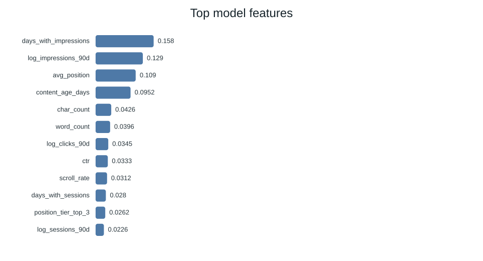

Abstract
This project shows how website traffic data can help writing teams decide which pages to update first. We analyzed 30,000 web pages from 32 different websites to find patterns of traffic drops. By testing our models on entirely new websites, we trained a simple model (Logistic Regression) to rank pages by their risk of losing traffic. Our model achieved an accuracy of 76% in its top 50 recommendations, which is a 1.6x lift over using a simple manual rule (48%). This tool acts as a helpful guide for editors, saving them time by pointing them to the pages that need the most work.
1. Introduction
Websites naturally lose search traffic as their content gets old. To stop this traffic loss, writing teams need to update and rewrite their articles. However, most teams are small and can only update about 50 pages a week, while their website has thousands of pages. This study builds a prioritization system that ranks pages so that editors spend their limited time on the pages that will bring the most value.
2. The Dataset
We used a dataset of 30,000 pages across 32 websites. Each row in our data contains details like views, Google rankings, word count, and user engagement over 90 days. We did not use short-term trend columns during model training because they would have leaked the answers. We also kept all personal details (like website names and URLs) completely private.
3. Methodology
We set up our model to predict a simple label: whether a page's traffic dropped by more than 20% in the last month. We trained a Logistic Regression model using 17 search metrics and 8 categorical features. To make sure our test was honest, we held out 20% of the websites entirely during training. This proved that our model can generalize to new websites it has never seen before.
4. Results
We compared our machine learning model against a simple baseline rule (which just flagged old, popular pages). The baseline rule got 48% of its top 50 recommendations right. The Logistic Regression model achieved a precision of 76.0% (getting 38 out of 50 correct). Interestingly, the complex Random Forest model overfit on our training websites, scoring lower (58%) than our simpler models.
| Model | ROC-AUC | Precision@50 |
|---|---|---|
| Baseline Heuristic | 0.588 | 0.480 |
| Logistic Regression (Best) | 0.652 | 0.760 |
| Decision Tree | 0.664 | 0.720 |
| Random Forest | 0.670 | 0.580 |

5. Limitations & Honest Framing
Limitations Checklist
Observational Limit: This tool is a guide; it cannot guarantee that updating a page will immediately bring back search traffic. It only points out pages that show signs of risk.
External Factors: Our model cannot predict traffic drops caused by sudden Google search updates or changes in seasonal demand (like holiday shopping).
6. Ranked Recommendations (Action Playbook)
Editors should review the top pages in the queue and take actions based on the warning flags:
- Expand and Refresh: If a page gets high traffic but is under 1,200 words, editors should add more details, examples, and subtopics.
- Review Click Rates (CTR): If a page ranks near the top of Google but gets very few clicks, editors should rewrite the title and description to make it more appealing in search results.

7. Reproducibility
You can find all the code, models, and steps used in this project in our public GitHub repository. Anyone can clone it and rerun our tests.
Repo Link: github.com/Deeja-ish/flyrank_ML_assignment1